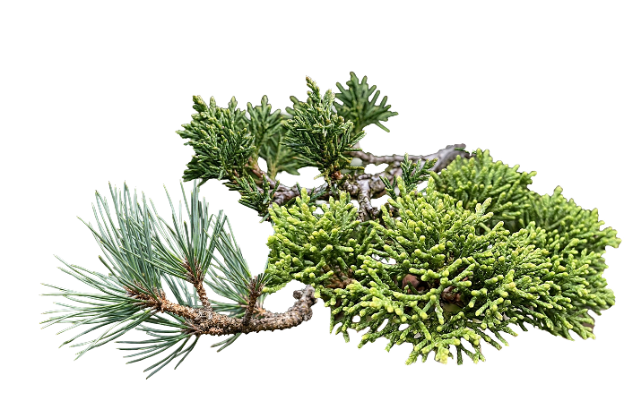
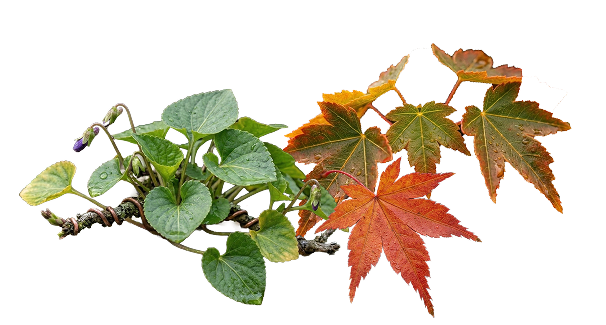
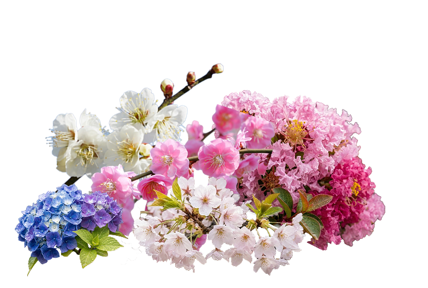
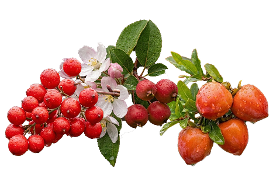
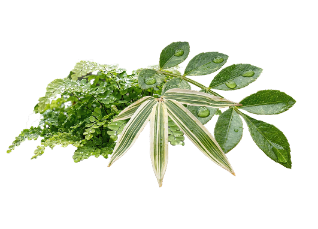

樹木による分類
盆栽は、その植物の種類自体での分類ができる。
大きく松柏盆栽と雑木盆栽の2つに分けられ、雑木盆栽はその中でも4つの種類に分けられることがある。
代表的な植物としては、松や真柏などの松柏盆栽だが、雑木盆栽の中には花や実をつける盆栽もある。
-
松柏盆栽
黒松、五葉松、真柏などの針葉樹を用いた盆栽。
一年中緑色の葉を茂らせ、その剛健さや永遠性、生命力の強さから、盆栽の代表格として古くから愛されている。
-
葉物盆栽
季節ごとに変化を見せる落葉樹などの葉を楽しむ盆栽。
楓、欅、モミジ、竹などが代表的で、葉の姿や四季の移ろいを感じられる。育てやすく盆栽初心者でも気軽に楽しめる。
-
花物盆栽
花の美しさを感じられる盆栽。
梅、桜、ボケ、サツキ、藤などが用いられる。華やかで可憐だが、他の盆栽と比べて手がかかる傾向も。
-
実物盆栽
実を成らせて鑑賞する盆栽。
姫リンゴ、カリン、柿、ウメモドキなどが代表的。肥料の調節などやや難しい面はあるが、色づく実に季節を感じる盆栽。
-
草物盆栽
樹木ではなく、山野の草花を鉢に植えて愛でる盆栽。
単独で飾って鑑賞するというよりは、数種類の野草や山草などを寄せ植えにして、花畑や野原など山野の景色を再現することが多い。